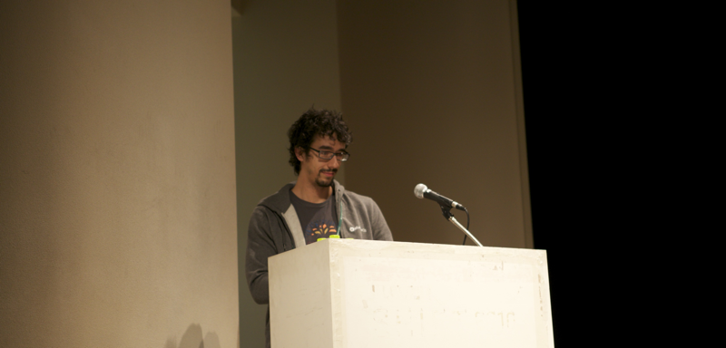

About Author

Rhio Kim
blog: http://rhio.tistory.com
twitter: @rhiokim
github: rhiokim
자바스크립트를 좋아하는 인간입니다.
- Arduino
- Node.js
- HCI
About this Article
Date Released:
Thursday, November 22 2012 11:13 PM하루프레스 in #playnode conference 2012

공식 사이트 : nodeconf.kr
이번 국내 첫 노드 컨퍼런스인 PlayNode 에는 npm 를 개발한 Isaac Z. Schlueter 과 nodeconf 창시자인 Mikeal Rogers 그리고 마지막으로 Nodejitsu CEO 인 Charlie Robbins 세명의 Node.js 생태계에 주된 공헌자들 그리고 국내 노드 닌자들과 함께 하루동안 국내 개발자들과 노드 기술 경험에 대한 이야기를 공유하였습니다.


하루프레스 개발 경험 공유도 발표하였습니다. 공유 차원에서 포스팅합니다.
프리젠테이션
저의 경우 30 분동안 Node.js 기반의 정적 블로그 엔진 소개와 개발 이야기 를 나누었습니다.
동영상
프리젠테이션에 포함된 동영상입니다.
약간 속도가 빠릅니다.